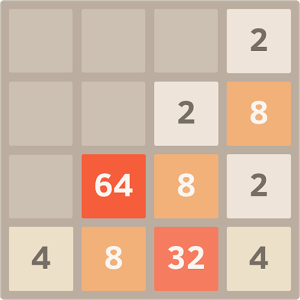
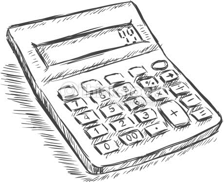

2048
《2048》是一款單人線上和移動端遊戲，由19歲的意大利人Gabriele Cirulli於2014年3月開發。遊戲任務是在一個網格上滑動小方塊來進行組合，直到形成一個帶有有數字2048的方塊。
挑戰一下！

計算器
在过去，诸如算盘、纳皮尔骨头、数学表书籍、工程计算尺或机械加法机（adding machine）在数值计算上扮演辅助角色。计算器这词原本指的是以纸笔运行数学计算的职业人士，这样的半手动计算工作既繁重又易出错。
試用一下！